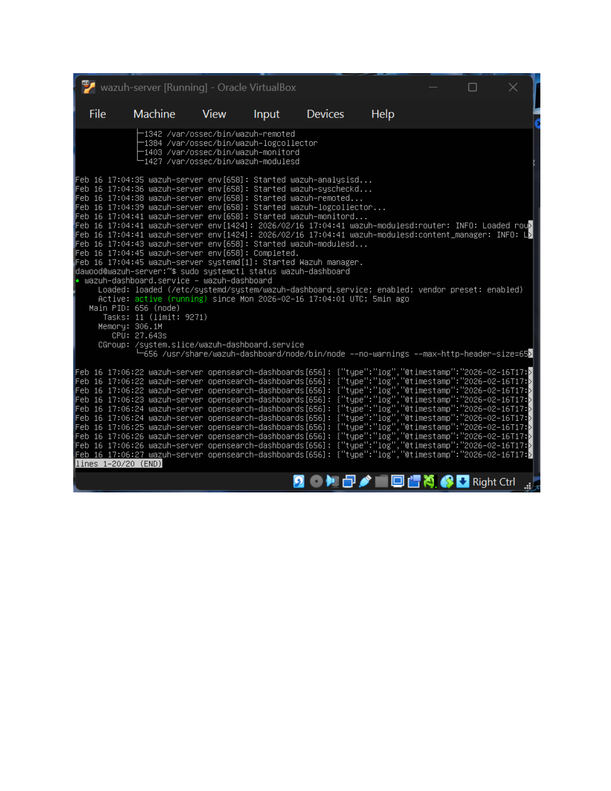

Visibility starts with
a working pipeline.
Controlled Linux and Wazuh practice: check connectivity and service health before drawing conclusions from alerts.
PERSONAL HOME LABGUIDED LEARNING RECORDThe environment
I practised in VirtualBox with a Kali test machine, an Ubuntu target and a Wazuh server. The work included Linux access controls, SSH/authentication logs, agent registration, service checks and simulated security events. These were learning exercises, not a production SOC deployment.
My troubleshooting approach
- Checked the virtual-network configuration and connectivity between the target and Wazuh manager.
- Inspected agent registration and manager/agent service state.
- Reviewed local authentication and system logs alongside Wazuh output when investigating simulated activity.
- Recorded configuration changes, observed output and validation gaps instead of treating a running service as proof of complete detection coverage.
A concrete evidence point

What the evidence supports
| Evidence or record | Supported interpretation | Limit |
|---|---|---|
| Captured dashboard service status | The service was running at the captured time. | Does not prove browser login or monitoring coverage. |
| Learning records describe agent/network troubleshooting. | Documented practice connecting the components. | No new independent runtime retest was performed for this portfolio. |
| Custom-rule and changed-condition exercises | Learning about detection logic and validation. | No claim of a successful bypass, complete attack coverage or production-ready rule. |
What I learned
Service health, event collection and alert logic are separate checks. A useful investigation ties a conclusion to the correct host, event, timestamp and rule. Seeing fewer alerts is not enough to establish evasion, and an individual alert is not automatically a time-based correlation.
These lessons support my IAM direction: access decisions need both careful configuration and evidence showing what happened.
Sources
- Personal Linux/Wazuh learning records, especially the detection-pipeline exercise and associated service-status capture.
- Wazuh agent enrollment documentation
- Wazuh rules documentation